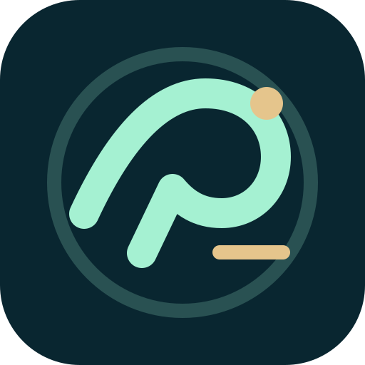

Welcome to Broadcast
Tap Refresh to retrieve public headlines. Your selections are saved on this device.

News that matters to your decisions, not just your attention.
Tap Refresh to retrieve public headlines. Your selections are saved on this device.
News is provided by public third-party feeds. Automatic background updates and push notifications are not enabled in this standalone version. ChatGPT scheduled briefings remain in ChatGPT.
Choose what deserves your attention. Settings are stored on this device.
Regional priority influences the headline search. It does not guarantee local coverage.
Tap Refresh to load the latest headlines. For automatic three-hour ChatGPT briefings, use your existing scheduled ChatGPT task; they cannot be delivered directly to this app through Plus.
In Chrome, open the hosted website, then select ⋮ → Add to Home screen → Install if offered.